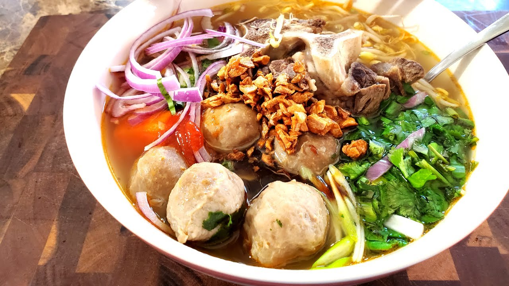

back
Kathew Recipe

Description
A savoury soup, this noodle dish is Cambodia's take on the popular Vietnamese pho. This recipe does not include exact measurements.
Soup Ingredients
- Beef or Pork Bones
- Onions
- Carrots
- Ginger
- Fish Sauce
- Beef Broth or Pho Broth
- Rock Sugar
- Star Anise
- Cinnamon Sticks
- Cardamom Pods
Garnishes
- Fried Onions
- Fish Balls
- Beef Balls
- Fried Dough Stick
- Raw Beef
- Boiled Beef Tripe
Steps
- Boil the bones in water for 30 minutes
- Meanwhile peel and cut the carrots into chunks and split the onions in half and slice the ginger into large slices
- Place the onion and ginger in an oven to char or char on a hot pan with no oil
- Toast the seasonings and place in a bag or tea strainer
- Strain the pot with the bones and give the bones a quick rinse and place back into the pot with beef or pho broth after making sure the pot is clean of scum
- Once the bones come back to a boil, skim off any excess scum and place the charred onion, charred ginger, toasted spices, and carrots into the pot with the bones
- Lower the heat so that the soup goes to a simmer and let simmer for a few hours
- Once closer to serving time, add rock sugar and fish sauce to taste
- Soak rice noodles in water and place them in a bowl, ladling soup, and placing toppings to serve